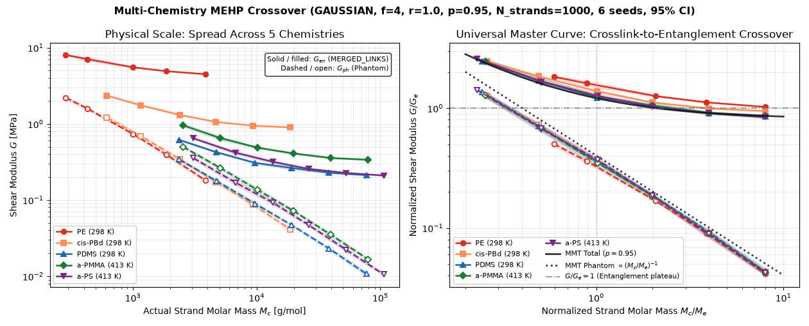
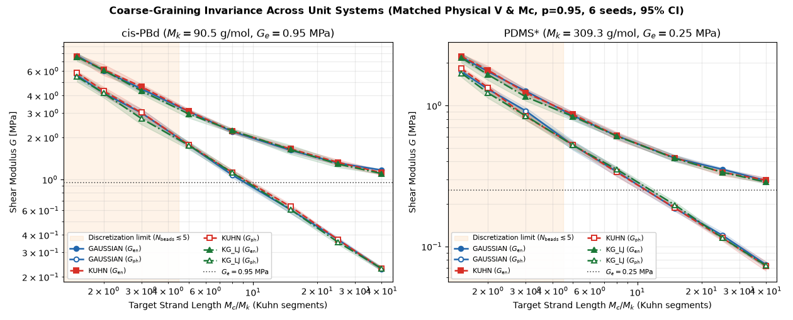
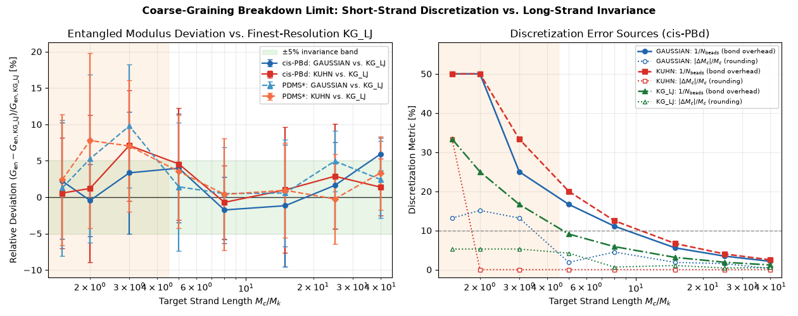

Note
Go to the end to download the full example code.
Multi-Chemistry Crossover & Coarse-Graining Invariance (GAUSSIAN vs. KUHN vs. KG_LJ)¶
Real polymer elastomers span more than an order of magnitude in entanglement
plateau modulus (\(G_e = 0.25\text{--}4.38\,\text{MPa}\)) and entanglement
molar mass (\(M_e = \rho R T / G_e \approx 480\text{--}13{,}300\,\text{g/mol}\)).
Using the Everaers et al. polymer property database bundled in
pylimer_tools.io.bead_spring_parameter_provider together with
MCUniverseGenerator and
MEHPSimulator (Gusev [Gus19],
Bernhard and Gusev [BG25], Bernhard et al. [BSG25]), this
example investigates two fundamental questions for predictive network modeling:
Multi-chemistry universal crossover across :math:`M_c / M_e`: Five contrasting chemistries — tightly entangled
PE(\(G_e = 4.38\,\text{MPa}\)) andcis-PBd(\(0.95\,\text{MPa}\)), loosely entangledPDMS*(\(0.25\,\text{MPa}\)), and stiff/glassy-melt referencesa-PMMA(\(0.39\,\text{MPa}\), \(413\,\text{K}\)) anda-PS*(\(0.25\,\text{MPa}\), \(413\,\text{K}\)) — are simulated withGAUSSIANacross \(M_c / M_e \in [0.25, 8.0]\) (\(f = 4\), \(r = 1.0\), \(p = 0.95\), \(N_{\text{strands}} = 1000\), 6 seeds). When normalized as \(G / G_e\) vs. \(M_c / M_e\), all five chemistries collapse onto a single crosslink-dominated (\(\propto (M_c / M_e)^{-1}\)) to entanglement-dominated (\(\to T_e\)) master curve (Gusev and Schwarz [GS22], Langley [Lan68], Macosko and Miller [MM76a]).Coarse-graining discretization invariance & breakdown: For
cis-PBdandPDMS*, the same physical network (matched physical \(M_c\), \(r = 1.0\), \(p = 0.95\), and matched physical box volume in \(\text{nm}^3\)) is modeled using all three parameterizations —GAUSSIAN,KUHN, andKG_LJ(in LJ \(\sigma\) reduced units) — from ultra-short strands (\(M_c = 1.5\,M_k\), \(N_{\text{beads}} = 2\text{--}3\)) up to long Gaussian strands (\(M_c = 40\,M_k\)). This verifies unit-converted modulus invariance in the long-strand limit and exposes the coarse-graining breakdown limit when \(N_{\text{beads}} \lesssim 3\text{--}5\).
from pathlib import Path
import sys
from typing import Any, Tuple
import matplotlib.pyplot as plt
import numpy as np
if "__file__" in globals():
_examples_dir = str(Path(__file__).resolve().parents[1])
_fb_dir = str(Path(__file__).resolve().parent)
for _p in (_examples_dir, _fb_dir):
if _p not in sys.path:
sys.path.insert(0, _p)
from _example_cache import ( # noqa: E402
format_benchmark_footnote,
get_example_cache_path,
load_or_compute_cache,
)
from _multichemistry_runner import ( # noqa: E402
COARSE_GRAIN_MODELS,
POLYMER_SPECS,
CoarseGrainModel,
PolymerChemistry,
load_model_constants,
run_multichemistry_study,
)
import pylimer_tools_cpp as pt # noqa: E402
def _deduplicate_by_beads(
n_beads: np.ndarray,
*arrays: np.ndarray,
) -> Tuple[np.ndarray, ...]:
"""Keep the first occurrence of each distinct bead count (e.g. clamped PE)."""
_, unique_idx = np.unique(n_beads, return_index=True)
unique_idx = np.sort(unique_idx)
return tuple(arr[unique_idx] for arr in arrays)
def _plot_ci_band(
ax: plt.Axes,
x: np.ndarray,
mean: np.ndarray,
ci: np.ndarray,
color: str,
marker: str,
linestyle: str,
label: str,
filled: bool = True,
) -> None:
"""Plot ensemble mean with a translucent 95% Student's t confidence band."""
mfc = color if filled else "white"
ax.plot(
x,
mean,
color=color,
marker=marker,
linestyle=linestyle,
linewidth=1.8,
markersize=5.5,
markerfacecolor=mfc,
markeredgewidth=1.4,
label=label,
)
ax.fill_between(
x,
np.maximum(mean - ci, 1e-6),
mean + ci,
color=color,
alpha=0.14,
)
Quick API Demo: Everaers et al. Polymer Properties & Cross-Model Consistency¶
We inspect the five contrasting polymer chemistries and verify that a single
PDMS* network (\(M_c = 25\,M_k\), \(N_{\text{strands}} = 300\))
yields consistent shear moduli in MPa across GAUSSIAN, KUHN, and
KG_LJ (where lengths are expressed in Lennard-Jones \(\sigma\)).
print(
f"{'Polymer':<10} {'Category':<20} {'T [K]':>6} {'Ge [MPa]':>9} "
f"{'Me [g/mol]':>11} {'Mk [g/mol]':>11} {'Nek':>6}"
)
print("-" * 79)
for spec in POLYMER_SPECS:
c = load_model_constants(spec.chemistry, CoarseGrainModel.GAUSSIAN)
print(
f"{spec.chemistry.value:<10} {spec.category:<20} {c.temperature_k:6.0f} "
f"{c.ge_mpa:9.2f} {c.me_g_per_mol:11.1f} {c.mk_g_per_mol:11.1f} {c.nek:6.2f}"
)
print("\nSingle-network cross-model check for PDMS* at Mc = 25 Mk (N_strands = 300):")
n_strands_demo = 300
n_xlinks_demo = n_strands_demo // 2
cfg_demo = pt.MEHPLinearSolverConfig()
cfg_demo.simplification_mode = pt.StructureSimplificationMode.INACTIVE_THEN_X2F
for cg_model in COARSE_GRAIN_MODELS:
c = load_model_constants(PolymerChemistry.PDMS, cg_model)
target_mc_demo = 25.0 * c.mk_g_per_mol
n_beads_demo = max(2, int(round(target_mc_demo / c.mw_g_per_mol)))
vol_nm3_demo = (n_strands_demo * target_mc_demo) / (
(c.rho_g_per_cm3 * 1e-21) * 6.02214076e23
)
vol_sim_demo = vol_nm3_demo / (c.distance_unit_nm**3)
box_l_demo = vol_sim_demo ** (1.0 / 3.0)
gen_demo = pt.MCUniverseGenerator(box_l_demo, box_l_demo, box_l_demo)
gen_demo.set_seed(42)
gen_demo.config_nr_of_mc_steps(0)
gen_demo.set_bead_distance(c.b_sim)
gen_demo.set_mean_squared_bead_distance(c.b2_sim)
gen_demo.add_crosslinkers(n_xlinks_demo, 4)
gen_demo.add_strands(n_strands_demo, [n_beads_demo] * n_strands_demo)
gen_demo.link_strands_to_conversion(0.95)
fb_ph_demo = gen_demo.get_mehp_simulator(
entanglement_mode=pt.EntanglementMode.NONE, crosslinker_type=2
)
fb_ph_demo.run(cfg_demo)
g_ph_demo = (
c.gamma_conv_mpa
* float(np.sum(fb_ph_demo.get_gamma_factors(c.r02_sim)))
/ vol_sim_demo
)
n_ent_demo = int(round(c.ent_density_sim * vol_sim_demo))
es_demo = gen_demo.sample_entanglements(
n_ent_demo,
c.cutoff_sim,
0.0,
0,
3.0,
"demo_cg",
pt.EntanglementFilteringMode.OMIT_INACTIVE,
)
fb_en_demo = gen_demo.get_mehp_simulator(
es_demo,
entanglement_mode=pt.EntanglementMode.MERGED_LINKS,
crosslinker_type=2,
)
fb_en_demo.run(cfg_demo)
g_en_demo = (
c.gamma_conv_mpa
* float(np.sum(fb_en_demo.get_gamma_factors(c.r02_sim)))
/ vol_sim_demo
)
print(
f" {cg_model.name:<8} | du={c.distance_unit_nm:.3f} nm | N={n_beads_demo:2d} | "
f"G_ph={g_ph_demo:.4f} MPa | G_en={g_en_demo:.4f} MPa"
)
cache_path = get_example_cache_path(
"multichemistry_and_coarse_graining_cache.npz", "force_balance"
)
data: dict[str, Any] = load_or_compute_cache(cache_path, run_multichemistry_study)
n_repeats = int(data["n_repeats"])
n_strands = int(data["n_strands"])
conversion = float(data["conversion"])
Polymer Category T [K] Ge [MPa] Me [g/mol] Mk [g/mol] Nek
-------------------------------------------------------------------------------
PE Tightly entangled 298 4.38 481.4 168.3 2.86
cis-PBd Tightly entangled 298 0.95 2347.3 90.5 25.93
PDMS* Loosely entangled 298 0.25 9613.5 309.3 31.08
a-PMMA Stiff / glassy-melt 413 0.39 9949.4 598.0 16.72
a-PS* Stiff / glassy-melt 413 0.25 13309.7 725.3 18.35
Single-network cross-model check for PDMS* at Mc = 25 Mk (N_strands = 300):
GAUSSIAN | du=1.000 nm | N=29 | G_ph=0.0862 MPa | G_en=0.3292 MPa
KUHN | du=1.000 nm | N=25 | G_ph=0.0981 MPa | G_en=0.3423 MPa
KG_LJ | du=0.616 nm | N=48 | G_ph=0.0978 MPa | G_en=0.3455 MPa
Loading cached example data from multichemistry_and_coarse_graining_cache.npz...
1. Multi-Chemistry Universal Crossover Across \(M_c / M_e\)¶
In physical units (left panel), the five chemistries span more than two orders of magnitude in strand molar mass \(M_c\) and shear modulus \(G\) because of their vastly different entanglement densities (\(G_e = 0.25\text{--}4.38\,\text{MPa}\)) and temperatures (\(298\text{--}413\,\text{K}\)).
When rescaled by each polymer’s entanglement scale (\(G / G_e\) vs.
\(M_c / M_e\), right panel), all five chemistries collapse onto a single
universal crossover curve from crosslink-dominated elasticity
(\(G_{\text{ph}} / G_e \propto (M_c / M_e)^{-1}\)) to the entanglement
plateau (\(G_{\text{en}} / G_e \to T_e \approx 0.85\) at \(p = 0.95\),
approaching \(1\) as \(p \to 1\)). Notably, polyethylene (PE) has
only \(N_{ek} = 2.86\) Kuhn segments per entanglement, so integer bead
clamping (\(N_{\text{beads}} \ge 2\)) sets a physical resolution floor at
\(M_c / M_e \approx 0.59\) for the Gaussian bead model.
fig1, (ax1_abs, ax1_norm) = plt.subplots(1, 2, figsize=(12.6, 5.1))
n_polys = len(data["p1_poly_names"])
for p_idx in range(n_polys):
label = str(data["p1_display_names"][p_idx])
color = str(data["p1_colors"][p_idx])
marker = str(data["p1_markers"][p_idx])
n_b = data["p1_n_beads"][p_idx]
mc_u, g_ph_u, g_ph_ci_u, g_en_u, g_en_ci_u = _deduplicate_by_beads(
n_b,
data["p1_actual_mc"][p_idx],
data["p1_g_ph_mean"][p_idx],
data["p1_g_ph_ci"][p_idx],
data["p1_g_en_mean"][p_idx],
data["p1_g_en_ci"][p_idx],
)
ratio_u, g_ph_n_u, g_ph_n_ci_u, g_en_n_u, g_en_n_ci_u = _deduplicate_by_beads(
n_b,
data["p1_actual_mc_over_me"][p_idx],
data["p1_g_ph_norm_mean"][p_idx],
data["p1_g_ph_norm_ci"][p_idx],
data["p1_g_en_norm_mean"][p_idx],
data["p1_g_en_norm_ci"][p_idx],
)
_plot_ci_band(
ax1_abs, mc_u, g_en_u, g_en_ci_u, color, marker, "-", label, filled=True
)
_plot_ci_band(
ax1_abs, mc_u, g_ph_u, g_ph_ci_u, color, marker, "--", "", filled=False
)
_plot_ci_band(
ax1_norm,
ratio_u,
g_en_n_u,
g_en_n_ci_u,
color,
marker,
"-",
label,
filled=True,
)
_plot_ci_band(
ax1_norm,
ratio_u,
g_ph_n_u,
g_ph_n_ci_u,
color,
marker,
"--",
"",
filled=False,
)
# Overlay chemistry-independent MMT reference curves on normalized panel
mmt_grid = data["p1_mmt_grid"]
ax1_norm.plot(
mmt_grid,
data["p1_mmt_g_tot_norm"],
color="#111111",
linestyle="-",
linewidth=2.0,
alpha=0.85,
label="MMT Total ($p = 0.95$)",
)
ax1_norm.plot(
mmt_grid,
data["p1_mmt_g_ph_norm"],
color="#111111",
linestyle=":",
linewidth=2.0,
alpha=0.85,
label=r"MMT Phantom $\propto (M_c / M_e)^{-1}$",
)
ax1_norm.axhline(
1.0,
color="#666666",
linestyle="-.",
linewidth=1.1,
alpha=0.8,
label=r"$G / G_e = 1$ (Entanglement plateau)",
)
ax1_norm.axvline(1.0, color="#aaaaaa", linestyle=":", linewidth=1.0)
ax1_abs.set_xscale("log")
ax1_abs.set_yscale("log")
ax1_abs.set_xlabel(r"Actual Strand Molar Mass $M_c$ [g/mol]")
ax1_abs.set_ylabel(r"Shear Modulus $G$ [MPa]")
ax1_abs.set_title("Physical Scale: Spread Across 5 Chemistries")
ax1_abs.grid(True, which="both", alpha=0.25)
ax1_abs.legend(fontsize=8.2, loc="lower left", framealpha=0.92)
ax1_abs.text(
0.97,
0.95,
"Solid / filled: $G_{\\mathrm{en}}$ (MERGED_LINKS)\n"
"Dashed / open: $G_{\\mathrm{ph}}$ (Phantom)",
transform=ax1_abs.transAxes,
ha="right",
va="top",
fontsize=8.0,
bbox={"boxstyle": "round,pad=0.3", "facecolor": "white", "alpha": 0.85},
)
ax1_norm.set_xscale("log")
ax1_norm.set_yscale("log")
ax1_norm.set_xlabel(r"Normalized Strand Molar Mass $M_c / M_e$")
ax1_norm.set_ylabel(r"Normalized Shear Modulus $G / G_e$")
ax1_norm.set_title("Universal Master Curve: Crosslink-to-Entanglement Crossover")
ax1_norm.grid(True, which="both", alpha=0.25)
ax1_norm.legend(fontsize=7.8, loc="lower left", ncol=2, framealpha=0.92)
fig1.suptitle(
f"Multi-Chemistry MEHP Crossover (GAUSSIAN, f=4, r=1.0, p={conversion:.2f}, "
f"N_strands={n_strands}, {n_repeats} seeds, 95% CI)",
fontsize=11.5,
fontweight="bold",
)
fig1.tight_layout()
plt.show()

2. Coarse-Graining Discretization Invariance (GAUSSIAN vs. KUHN vs. KG_LJ)¶
Next, we model the exact same physical network (matched physical \(M_c\)
and matched physical box volume \(V\) in \(\text{nm}^3\)) for
cis-PBd and PDMS* using all three coarse-graining levels:
GAUSSIAN: \(M_w = M_k / \alpha \approx 0.849\,M_k\) (\(\alpha = 3\pi / 8\)), distance unit \(1\,\text{nm}\).
KUHN: \(M_w = M_k\), freely jointed Kuhn segments (\(\langle b \rangle = \sqrt{\langle b^2 \rangle} = l_K\)), distance unit \(1\,\text{nm}\).
KG_LJ: Kremer–Grest bead mass \(M_w = M_b \approx 0.47\text{--}0.52\,M_k\) (roughly \(2\times\) finer bead resolution), distance unit LJ \(\sigma\) (\(0.41\,\text{nm}\) for
cis-PBd, \(0.62\,\text{nm}\) forPDMS*).
For \(M_c \gtrsim 8\,M_k\), all three models yield invariant phantom and entangled shear moduli in MPa after unit conversion, confirming that MEHP elasticity is independent of coarse-graining resolution in the Gaussian strand regime.
model_styles = {
"GAUSSIAN": ("#2166ac", "o", "-"),
"KUHN": ("#d73027", "s", "--"),
"KG_LJ": ("#1b7837", "^", "-."),
}
fig2, axes2 = plt.subplots(1, 2, figsize=(12.6, 5.1))
mc_over_mk = data["p2_mc_over_mk"]
p2_poly_names = data["p2_poly_names"]
p2_model_names = data["p2_model_names"]
for p_idx, ax in enumerate(axes2):
poly_name = str(p2_poly_names[p_idx])
ge_val = float(data["p2_ge_mpa"][p_idx])
mk_val = float(data["p2_mk_g_mol"][p_idx])
ax.axvspan(
1.3,
4.5,
color="#fdae61",
alpha=0.14,
label=r"Discretization limit ($N_{\mathrm{beads}} \lesssim 5$)",
)
for m_idx, m_name_raw in enumerate(p2_model_names):
m_name = str(m_name_raw)
color, marker, ls = model_styles[m_name]
_plot_ci_band(
ax,
mc_over_mk,
data["p2_g_en_mean"][p_idx, m_idx],
data["p2_g_en_ci"][p_idx, m_idx],
color,
marker,
ls,
f"{m_name} ($G_{{\\mathrm{{en}}}}$)",
filled=True,
)
_plot_ci_band(
ax,
mc_over_mk,
data["p2_g_ph_mean"][p_idx, m_idx],
data["p2_g_ph_ci"][p_idx, m_idx],
color,
marker,
ls,
f"{m_name} ($G_{{\\mathrm{{ph}}}}$)",
filled=False,
)
ax.axhline(
ge_val,
color="#555555",
linestyle=":",
linewidth=1.2,
label=f"$G_e = {ge_val:.2f}$ MPa",
)
ax.set_xscale("log")
ax.set_yscale("log")
ax.set_xlim(1.3, 45.0)
ax.set_xlabel(r"Target Strand Length $M_c / M_k$ (Kuhn segments)")
ax.set_ylabel(r"Shear Modulus $G$ [MPa]")
ax.set_title(f"{poly_name} ($M_k = {mk_val:.1f}$ g/mol, $G_e = {ge_val:.2f}$ MPa)")
ax.grid(True, which="both", alpha=0.25)
ax.legend(fontsize=7.6, loc="lower left", ncol=2, framealpha=0.92)
fig2.suptitle(
f"Coarse-Graining Invariance Across Unit Systems (Matched Physical V & Mc, "
f"p={conversion:.2f}, {n_repeats} seeds, 95% CI)",
fontsize=11.5,
fontweight="bold",
)
fig2.tight_layout()
plt.show()

3. Quantifying the Coarse-Graining Breakdown Limit¶
To isolate discretization errors from statistical scatter, we plot the
relative modulus deviation of GAUSSIAN and KUHN with respect to the
finest-resolution KG_LJ reference (left panel), alongside the mechanistic
discretization metrics (right panel):
Integer bead rounding error \(|N_{\text{beads}} M_w - M_{c,\text{target}}| / M_{c,\text{target}}\): at \(M_c = 1.5\,M_k\), clamping to \(N_{\text{beads}} \ge 2\) forces a \(+33\%\) molar-mass error for
KUHNand \(+13\%\) forGAUSSIAN, whereasKG_LJresolves \(N_{\text{beads}} = 3\).Crosslinker-bond discretization overhead (\(1 / N_{\text{beads}}\)): a strand of \(N_{\text{beads}}\) interior beads spans \(N_{\text{beads}} + 1\) bonds between crosslinkers, introducing a \(+50\%\) compliance shift at \(N = 2\) vs. \(+25\%\) at \(N = 4\) (and only \(+2.5\%\) at \(N = 40\)).
Short-strand entanglement exclusion & bond statistics:
same_strand_cutoff = 3.0(in bead index units) completely suppresses intra-strand pairs when \(N_{\text{beads}} \le 3\), whileKG_LJhas \(\langle b \rangle / \sqrt{\langle b^2 \rangle} \approx 0.70\) compared to \(1.0\) forKUHNand \(0.921\) forGAUSSIAN.
fig3, (ax3_dev, ax3_mech) = plt.subplots(1, 2, figsize=(12.6, 5.0))
# Reference index for KG_LJ
kg_idx = list(p2_model_names).index("KG_LJ")
ax3_dev.axhspan(
-5.0, 5.0, color="#a6dba0", alpha=0.25, label=r"$\pm 5\%$ invariance band"
)
ax3_dev.axhline(0.0, color="#333333", linestyle="-", linewidth=1.0)
ax3_dev.axvspan(1.3, 4.5, color="#fdae61", alpha=0.14)
dev_styles = [
("cis-PBd", "GAUSSIAN", "#2166ac", "o", "-"),
("cis-PBd", "KUHN", "#d73027", "s", "-"),
("PDMS*", "GAUSSIAN", "#4393c3", "^", "--"),
("PDMS*", "KUHN", "#f46d43", "D", "--"),
]
for p_idx, poly_name_raw in enumerate(p2_poly_names):
poly_name = str(poly_name_raw)
g_en_ref = data["p2_g_en_mean"][p_idx, kg_idx]
for m_name in ("GAUSSIAN", "KUHN"):
m_idx = list(p2_model_names).index(m_name)
g_en_mod = data["p2_g_en_mean"][p_idx, m_idx]
rel_dev_pct = 100.0 * (g_en_mod - g_en_ref) / g_en_ref
# Propagated 95% CI on relative difference
ci_mod = data["p2_g_en_ci"][p_idx, m_idx]
ci_ref = data["p2_g_en_ci"][p_idx, kg_idx]
rel_ci_pct = 100.0 * np.sqrt(
(ci_mod / g_en_ref) ** 2 + (g_en_mod * ci_ref / g_en_ref**2) ** 2
)
_, _, color, marker, ls = [
s for s in dev_styles if s[0] == poly_name and s[1] == m_name
][0]
ax3_dev.errorbar(
mc_over_mk,
rel_dev_pct,
yerr=rel_ci_pct,
color=color,
marker=marker,
linestyle=ls,
linewidth=1.6,
markersize=5.5,
capsize=3,
label=f"{poly_name}: {m_name} vs. KG_LJ",
)
ax3_dev.set_xscale("log")
ax3_dev.set_xlim(1.3, 45.0)
ax3_dev.set_xlabel(r"Target Strand Length $M_c / M_k$")
ax3_dev.set_ylabel(
r"Relative Deviation $(G_{\mathrm{en}} - G_{\mathrm{en,KG\_LJ}}) / G_{\mathrm{en,KG\_LJ}}$ [%]"
)
ax3_dev.set_title("Entangled Modulus Deviation vs. Finest-Resolution KG_LJ")
ax3_dev.grid(True, which="both", alpha=0.25)
ax3_dev.legend(fontsize=8.0, loc="upper right", framealpha=0.92)
# Right panel: mechanistic discretization diagnostics for cis-PBd
p_diag_idx = 0 # cis-PBd
target_mc_diag = data["p2_target_mc"][p_diag_idx]
for m_idx, m_name_raw in enumerate(p2_model_names):
m_name = str(m_name_raw)
color, marker, ls = model_styles[m_name]
n_b = data["p2_n_beads"][p_diag_idx, m_idx].astype(float)
actual_mc = data["p2_actual_mc"][p_diag_idx, m_idx]
round_err_pct = 100.0 * np.abs(actual_mc - target_mc_diag) / target_mc_diag
bond_overhead_pct = 100.0 / n_b
ax3_mech.plot(
mc_over_mk,
bond_overhead_pct,
color=color,
marker=marker,
linestyle=ls,
linewidth=1.8,
markersize=5.5,
label=f"{m_name}: $1/N_{{\\mathrm{{beads}}}}$ (bond overhead)",
)
ax3_mech.plot(
mc_over_mk,
round_err_pct,
color=color,
marker=marker,
linestyle=":",
linewidth=1.4,
markersize=4.5,
markerfacecolor="white",
label=f"{m_name}: $|\\Delta M_c| / M_c$ (rounding)",
)
ax3_mech.axvspan(1.3, 4.5, color="#fdae61", alpha=0.14)
ax3_mech.axhline(10.0, color="#666666", linestyle="--", linewidth=1.0, alpha=0.7)
ax3_mech.set_xscale("log")
ax3_mech.set_xlim(1.3, 45.0)
ax3_mech.set_ylim(-2.0, 58.0)
ax3_mech.set_xlabel(r"Target Strand Length $M_c / M_k$")
ax3_mech.set_ylabel("Discretization Metric [%]")
ax3_mech.set_title("Discretization Error Sources (cis-PBd)")
ax3_mech.grid(True, which="both", alpha=0.25)
ax3_mech.legend(fontsize=7.4, loc="upper right", ncol=1, framealpha=0.92)
fig3.suptitle(
"Coarse-Graining Breakdown Limit: Short-Strand Discretization vs. Long-Strand Invariance",
fontsize=11.5,
fontweight="bold",
)
fig3.tight_layout()
plt.show()

Numerical Summary & Provenance¶
print("\n=== Part 1 Summary: Universal Crossover G_en / G_e (Mean +/- 95% CI) ===")
header = f"{'Polymer':<10} | " + " | ".join(
f"tgt={r:>4.2f}" for r in data["p1_target_ratios"]
)
print(header)
print("-" * len(header))
for p_idx in range(n_polys):
name = str(data["p1_poly_names"][p_idx])
vals = [
f"{data['p1_g_en_norm_mean'][p_idx, r_idx]:.2f}({data['p1_n_beads'][p_idx, r_idx]:3d})"
for r_idx in range(len(data["p1_target_ratios"]))
]
print(f"{name:<10} | " + " | ".join(f"{v:>8}" for v in vals))
print("\n=== Part 2 Summary: G_en [MPa] at Short (2 Mk) vs. Long (40 Mk) Strands ===")
idx_short = int(np.where(np.isclose(mc_over_mk, 2.0))[0][0])
idx_long = int(np.where(np.isclose(mc_over_mk, 40.0))[0][0])
for p_idx, poly_name_raw in enumerate(p2_poly_names):
poly_name = str(poly_name_raw)
for tag, r_idx in (("Mc = 2 Mk", idx_short), ("Mc = 40 Mk", idx_long)):
parts = []
for m_idx, m_name_raw in enumerate(p2_model_names):
m_name = str(m_name_raw)
mean_v = float(data["p2_g_en_mean"][p_idx, m_idx, r_idx])
ci_v = float(data["p2_g_en_ci"][p_idx, m_idx, r_idx])
nb = int(data["p2_n_beads"][p_idx, m_idx, r_idx])
parts.append(f"{m_name}(N={nb:2d})={mean_v:.3f}+/-{ci_v:.3f}")
print(f" {poly_name:<8} {tag:<10}: " + " | ".join(parts))
print("\n" + format_benchmark_footnote(data))
=== Part 1 Summary: Universal Crossover G_en / G_e (Mean +/- 95% CI) ===
Polymer | tgt=0.25 | tgt=0.50 | tgt=1.00 | tgt=2.00 | tgt=4.00 | tgt=8.00
----------------------------------------------------------------------------
PE | 1.83( 2) | 1.82( 2) | 1.61( 3) | 1.26( 7) | 1.12( 13) | 1.02( 27)
cis-PBd | 2.47( 8) | 1.85( 15) | 1.38( 31) | 1.12( 61) | 1.00(122) | 0.95(244)
PDMS* | 2.47( 9) | 1.70( 18) | 1.23( 37) | 1.05( 73) | 0.91(146) | 0.85(293)
a-PMMA | 2.45( 5) | 1.67( 10) | 1.25( 20) | 1.05( 39) | 0.91( 78) | 0.87(157)
a-PS* | 2.58( 5) | 1.67( 11) | 1.27( 22) | 1.02( 43) | 0.91( 86) | 0.84(173)
=== Part 2 Summary: G_en [MPa] at Short (2 Mk) vs. Long (40 Mk) Strands ===
cis-PBd Mc = 2 Mk : GAUSSIAN(N= 2)=6.034+/-0.157 | KUHN(N= 2)=6.134+/-0.555 | KG_LJ(N= 4)=6.061+/-0.256
cis-PBd Mc = 40 Mk: GAUSSIAN(N=47)=1.167+/-0.021 | KUHN(N=40)=1.117+/-0.041 | KG_LJ(N=84)=1.102+/-0.012
PDMS* Mc = 2 Mk : GAUSSIAN(N= 2)=1.741+/-0.116 | KUHN(N= 2)=1.783+/-0.123 | KG_LJ(N= 4)=1.654+/-0.144
PDMS* Mc = 40 Mk: GAUSSIAN(N=47)=0.293+/-0.013 | KUHN(N=40)=0.296+/-0.012 | KG_LJ(N=77)=0.286+/-0.008
Measured on: Apple M3 Pro (12 cores), 36 GB RAM, Mac15,7, macOS 27.2.1 (arm64), Python 3.13.18 (cached 2026-11-26).
Total running time of the script: (0 minutes 2.974 seconds)